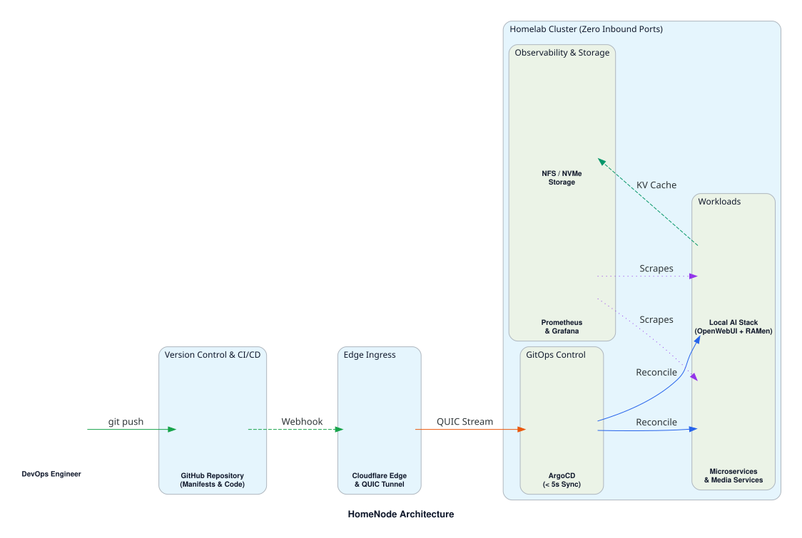

Declarative Docker Compose stack definitions for self-hosted infrastructure on Fedora Server. Integrated with GitHub Webhooks and Portainer CE for continuous zero-touch deployments and automated drift correction.
Webhook-triggered automated stack sync without manual SSH
Isolated bridge networks and volume persistence architecture
Kubernetes deployment manifest for Jellyfin media server featuring persistent hostPath storage, NodePort service routing, and GPU hardware device pass-through (`/dev/dri`) for high-throughput video transcoding.
Direct GPU device passthrough eliminating CPU bottlenecks
Persistent volume claims securing 100+ GB media library
Production monitoring architecture pairing Prometheus and Grafana with systemd Node Exporter, Pi-hole local DNS, and Nginx Proxy Manager. Ensures every internal service is monitored and routed by hostname rather than bare IP:port.
Real-time CPU, RAM, disk I/O and network scraping via Node Exporter
Pi-hole local DNS resolution preventing split-brain routing
High-efficiency private AI infrastructure marrying Kubernetes-hosted OpenWebUI with a bare-metal RAMen inference engine, enabling ultra-fast NVMe KV-cache snapshotting for instant local LLM interaction.
Instant KV-cache resumption from NVMe storage
Private and air-gapped LLM operations with no external data leakage
Automated incremental backup solution using Bash, rsync, NFS, and systemd timers. Features automated snapshot rotation, differential compression, and health verification logs.
systemd timer units delivering deterministic cron-free scheduling
NFS target failover with rsync hard-link preservation
Comprehensive practical labs for Red Hat Certified System Administrator 9: LVM partitioning, SELinux policies, firewall configuration, and systemd units.
Production Kubernetes deployment for Jellyfin media server featuring persistent hostPath storage, NodePort service routing, and Intel/NVIDIA GPU hardware transcoding passthrough.
Hardware-accelerated media streaming cluster with persistent volume claims.
Automated incremental backup solution using Bash, rsync, NFS, and systemd timers with automated log rotation and health verification.
Zero-touch daily incremental backups with automated retention policy.
BashsystemdrsyncNFS
No repositories match your criteria
Try searching for a different keyword or resetting your filter tabs.
SYSTEMS TOPOLOGY
Homelab & Network Architecture
Self-hosted infrastructure engineered for high availability, zero public exposure, and automated GitOps synchronization.

Zero Inbound Ports
Ingress traffic arrives through encrypted Cloudflare QUIC Tunnels with no public port forwarding on the home router. Caddy forward-authenticates every request via Authelia 2FA.
Zero-Delay GitOps
Webhook-triggered continuous delivery reconciles Git commits in sub-5 seconds. Workload states are declared in Git with automated drift detection and self-healing.
Unified Observability
Prometheus scrapes metrics across physical hosts and container runtimes, rendered in customizable Grafana dashboards with Pi-hole DNS routing.
COMPETENCIES
Technical Expertise & Tooling
Production-tested tools and frameworks utilized across cloud systems, pipelines, and applications.
I am an aspiring DevOps Engineer and passionate homelab architect based in Pakistan. My journey started with web development and has evolved into deep systems engineering, enterprise Linux administration, and Kubernetes GitOps orchestration.
I believe in declarative infrastructure: if it's not codified in Git, it doesn't exist. My homelab serves as a live proving ground where enterprise best practices — automated drift correction, zero inbound router ports, hardened SSH authentication, and full observability telemetry — are rigorously tested and iterated upon.
✓
Declarative State over Manual Configuration:Every service, network rule, and secret is managed as code.